lang fr|gb

utiliser dzen2
dzen2 est un logiciel de messages, notifications et menus pour X11. il a été conçu pour être léger, rapide et pour supporter les scripts en différents languages.
dzen2 supporte les polices XFT (en options), les couleurs et le formatage simple, les icônes et graphiques et les actions du clavier/souris. dzen2 est disponible dans la plupart des distributions GNU/Linux: la version intégrée au livarp vient des dépôts svn: dzen2-0.9.5.
dzen2 est utilisé sur livarp principalement pour les notifications. mais dzne peut aussi afficher toute sorte d'infos: le script dzenbar.sh situé dans votre $HOME/bin utilise ~/.conky/conkyrc_dzen pour récupérer des informations puis les afficher dans une barre interractive.
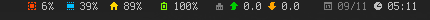configuration
options
dzen accepte différentes options, nous décriront plus tard le format appliqué à ces options:
options.....argments.................description
-fg.........#RRGGBB,color............couleur du texte
-bg.........#RRGGBB,color............couleur du fond
-fn.........police xft ou classic....type de police utilisé
-ta.........l(eft),c(enter),r(ight)..alignement du texte de la fenêtre “titre”
-sa..................................alignement du texte de la fenêtre “esclave”
-tw.........x(pixels)................largeur de la fenêtre “titre”
-w...................................largeur de la fenêtre
-h...................................hauteur des lignes, par défaut: hauteur de la police +2px
-x...................................position horizontale depuis le bord gauche de l'écran
-y...................................position verticale depuis le bord haut de l'écran
-l..........n(nombre)................nombre de lignes affichées dans la fenêtre “esclave”
-m...................................dzen2 en mode “menu” (voir section “menu”)
-e...................................évennements et actions (voir section events & actions)
-p..........s(econdes)...............la dernière valeur est persistente pendant 's' secondes (en option)
-u...................................mettre à jour les fenêtres “titre” et “esclave” en même temps
-xs.........n(uméro).................numéro de l'écran xinerama à utiliser
-v...................................version de dzen2
affichage
dzen2 affiche les fenêtres “titre” et “esclave” comme suit:
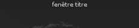 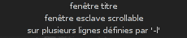la première ligne passée à dzen2 est affichée dans la fenêtre titre, les autres lignes seront affichées dans la zone esclave à moins que vous n'utilisiez l'option de format '^tw()' pour surpasser le comportement par défaut.
arrêt
dzen2 suspend l'affichage:
- lors d'un clic-droit sur dzen2 (par défaut)
- lors d'une pression sur [Esc] dans certaines conditions
- si le fichier envoyé à dzen2 se termine (EOF), sauf si l'option ”-p” est utilisée:
- '-p' sans argument fixe l'affichage pour toujours
- '-p n' fixe l'affichage pour 'n' secondes
utilisations
notez que les options décrites ici sont celles par défaut. vous pouvez modifier ces comportements grâce à l'option -e (voir events & actions).
option -l: slave window
utiliser l'option -l pour afficher plusieurs lignes au survol du pointeur sur la fenêtres “titre” de dzen2. le nombre de ligne à afficher est passé en argument (-l 5 affiche 5 lignes).
lorsque le pointeur quitte la fenêtre “esclave”, celle-ci est masquée, sauf si vous “fixez” la fenêtre avec un clic central.
les boutons 4 et 5 (molette de la souris) font défiler le contenu de la fenêtre “esclave” si le nombre de ligne dépasse la hauteur de la fenêtre.
exemple: une manière simple de comprendre comment la fenêtre esclave fonctionne (clic droit pour quitter dzen2):
cat ~/.bashrc | dzen2 -l 30 -p
option -e: events & actions
dzen permet d'associer certains évennements (clavier/souris) à des actions configurables.
syntaxe de l'option -e: -e 'event1=action1:option1:…option'n',…,action'm';…'
chaque évennement peut être associé à plusieurs actions qui peuvent avoir plusieurs options (limité à 64 pour chaque mais modifiable depuis les sources, fichier action.h).
- exemple
-e 'button1=exec:xterm:firefox;entertitle=uncollapse;button3=exit'
- explication
- button1=exec:xterm:firefox; : au clic gauche, lancement de xterm et firefox. dans cet exemple, xterm et firefox sont les options de l'action exec pour l'event button1.
- entertitle=uncollapse; : au passage du pointeur, dzen affiche (uncollapse) la fenêtre esclave
- button3=exit : au clic droit, arrêt de dzen2.
liste des évènements acceptés par dzen2
- onstart : l'action se lance au démarage de dzen.
- onexit : l'action se lance juste avant de quitter dzen.
- onnewinput : l'action se lance si une nouvelle entrée est passée à la fenêtre esclave.
- button1 : l'action se lance lors du clic gauche
- button2 : l'action se lance lors du clic central
- button3 : l'action se lance lors du clic droit
- button4 : l'action se lance avec la molette vers le haut
- button5 : l'action se lance avec la molette vers le bas
- button6 : l'action se lance lors d'une prassion sur le bouton 6 (sur certaines souris)
- button7 : l'action se lance lors d'une prassion sur le bouton 7 (sur certaines souris)
- entertitle : l'action se lance lors du survol de la fenêtre titre
- leavetitle : l'action se lance lorsqu'on quitte la fenêtre titre
- enterslave : l'action se lance lors du survol de la fenêtre esclave
- leaveslave : l'action se lance lorsqu'on quitte la fenêtre esclave
- sigusr1 : l'action se lance à réception du signal SIGUSR1 :?:
- sigusr2 : l'action se lance à réception du signal SIGUSR2 :?:
- key_KEYNAME : l'action se mance lors d'un évennement clavier(*)
les évennements clavier:
toutes les touches peuvent entrainer une action avec l'otion -e. la syntaxe utilisée est celle du fichier /usr/include/X11/keysymdef.h . par exemple, pour “e” event = key_e , pour “_” event = key_underscore
liste des actions:
- exec:command1:..:n : exécute les options passées en argument
- menuexec : exécute l'entrée de menu sélectionnée
- exit:retval : quitte dzen et retourne la valeur 'retval'
- print:str1:…:n : écrit les options passées en argument dans STDOUT
- menuprint : écrit l'entrée de menu sélectionnée dans STDOUT
- collapse : enroule (masque) la fenêtre esclave
- uncollapse : déroule (affiche) la fenêtre esclave
- togglecollapse : (en/de)roule la fenêtre esclave
- stick : fixe la fenêtre esclave
- unstick : libère la fenêtre esclave
- togglestick : fixe/libère la fenêtre esclave
- hide : masque la fenêtre titre
- unhide : affiche la fenêtre titre
- togglehide : masque/affiche la fenêtre titre
- raise : passe la fenêtre au premier plan
- lower : passe la fenêtre au dernier plan
- scrollhome : affiche les premières lignes de la fenêtre esclave
- scrollend : affiche les dernières lignes de ma fenêtre esclave
- scrollup:n : fait défiler la fenêtre esclave de 'n' lignes vers le haut (n=1 par défaut)
- scrolldown:n : fait défiler la fenêtre esclave de 'n' lignes vers le bas (n=1 par défaut)
- grabkeys : active le support du clavier
- ungrabkeys : désactive le support du clavier
- grabmouse : active le support de la souris (nécessaire seulement pour certains gestionnaires de fenêtres tels que fluxbox)
- ungrabmouse : désactive le support de la souris (nécessaire seulement pour certains gestionnaires de fenêtres tels que fluxbox)
les évennements par défaut:
si aucune option n'est passée en arguments, dzen observe les comportements par défaut suivant:
note: si vous définissez des options différentes, dzen ne tiendra aucun compte des valeurs par défaut: vous devrez spécifiez toutes les options.
- fenêtre titre seule
-e 'button3=exit:13'
- fenêtre titre + esclave multi-lignes ou en mode menu
-e 'entertitle=uncollapse,grabkeys;
enterslave=grabkeys;leaveslave=collapse,ungrabkeys;
button1=menuexec;button2=togglestick;button3=exit:13;
button4=scrollup;button5=scrolldown;
key_Escape=ungrabkeys,exit'
- fenêtre en mode menu horizontal
-e 'enterslave=grabkeys;leaveslave=ungrabkeys;
button4=scrollup;button5=scrolldown;
key_Left=scrollup;key_Right=scrolldown;
button1=menuexec;button3=exit:13
key_Escape=ungrabkeys,exit'
option -m: menu
dzen propose deux modes de menu: vertical et horizontal. pour activer ces modes, ajouter 'v'(ertical) ou 'h'(horizontal) à l'option '-m'. le menu est vertical par défaut.
- menu vertical (les deux expressions sont équivalentes):
dzen2 -p -l 4 -m < file dzen2 -p -l 4 -m v < file
- menu horizontal:
dzen2 -p -l 4 -m h < file
toutes les actions commençant par “menu” sont appliquées à l'entrée de menu sélectionné.
le mode de menu fonctionne de paire avec l'option '-l n'
le menu horizontal n'a pas de fenêtre titre, les actions passées à la fenêtre titre seront ignorées.
option -u: update simultané
cette option permet la mise à jour simultané entre la fenêtre titre et la fenêtre esclave.
un exemple sera plus explicite: imaginons que nous voulions afficher l'heure dans la fenêtre titre et une sortie de log dans le fenêtre esclave:
while true; do
date # output goes to the title window
dmesg | tail -n 10 # output goes to the slave window
sleep 1
done | dzen2 -l 10 -u
pour que cela fonctionne, il est important de spécifier le nombre exacte de ligne du fichier lu avec l'option '-l'.
option de formats
cette option permet d'appliquer dynamiquement un format particulier à l'affichage de dzen2.
dzen2 accepte les formats suivants:
- couleurs
- ^fg(color): couleur du texte/icones
- ^fg(): retour à la couleur par défaut
- ^bg(color): couleur du fond
- ^bg(): retour à la couleur par défaut
- graphiques
- ^i(chemin de l'image): affiche une image au format xbm ou xpm(en option)
- ^r(largeurxhauteur): affiche un rectangle aux dimensions spécifiées
- ^ro(largeurxhauteur): affiche un rectangle en contour aux dimensions spécifiées
- ^c('r'ayon): affiche un cercle de rayon 'r'
- ^co('r'ayon): affiche un cercle en contour de rayon 'r'
- positions
- ^p(+/-X): déplace la prochaine entrée à droite(+) ou gauche(-) de X pixels
- ^p(+/-X;+/-Y): déplace la prochaine entrée à droite(+) ou gauche(-) de X pixels et vers le haut(+) ou le bas(-) de Y pixels.
- ^pa(args): même arguments que précédement mais X et Y sont des valeurs absolues.
- interactions
- ^ca(BTN, CMD) … ^ca(): utilisé pour définir une zone cliquable dans la fenêtre titre
- BTN détermine le bouton de souris actif (1=gauche, 2=central, 3=droit …).
- CMD détermine la commande à lancer lors d'un clic sur la zone concernée.
- … : représente un texte affiché par dzen
- ^ca(): sans arguments, ferme la zone cliquable
- exemple: cette commande affichera "[mpd|vol]"
- le bloc entier […] répond au clic droit et gauche pour lecture/stop
- mpd répond à la molette pour naviguer dans la playlist mpd
- vol répond à la molette pour aumenter/diminuer le volume
- commandes d'actions
- ^togglecollapse()
- ^collapse()
- ^uncollapse()
- ^togglestick()
- ^stick()
- ^unstick()
- ^togglehide()
- ^hide()
- ^unhide()
- ^raise()
- ^lower()
- ^scrollhome()
- ^scrollend()
- ^exit()
- autres commandes
- ^tw(): affiche le texte uniquement dans la fenêtre titre. cette option peut générer des conflicts, à utiliser une seul fois par ligne et en début d'entrée.
- ^cs(): vide la fenêtre esclave, cette option doit être seule sur la ligne
- ^ib(VALUE): appliquer (ou pas) la couleur de fond définie par ^bg(color). “VALUE”=0:appliquer la couleur, =1:ne pas applique la couleur.
^ca(1,mpc toggle)^ca(3,mpc stop)[^ca(4,mpc prev)^ca(5,mpc next)mpd^ca()^ca()|^ca(4,mpc volume +3)^ca(5,mpc volume -3)vol^ca()^ca()]^ca()^ca()
voir la section “events & actions” pour une explication détaillée des commandes.
ces commandes peuvent être placées à n'importe quel endroit et avec toutes les combinaisons dans l'entrée soumise à dzen2.
les couleurs peuvent être spécifiées avec leur nom (red, green, darkorange…) ou leur valeur rrggbb (#ffffaa)
quelques exemples
- texte couleur
echo "^fg(red)I'm red text ^p(+20)^fg(blue)I am blue" | dzen2 -w 300 -p
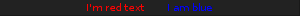- texte et fond couleur
echo "^bg(#ffaaaa)The ^fg(yellow)text to ^bg(blue)^fg(orange)colorize" | dzen2 -w 300 -p
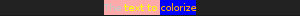- afficher "^"
echo "^fg(grey70)Some text containing ^^ characters" | dzen2 -w 300 -p
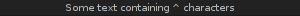- images xbm
echo "^i(dzicons/mail.xbm) I am an envelope ^fg(yellow)and ^i(dzicons/bat_full_02.xbm) I'm a baterry." | dzen2 -w 300 -p
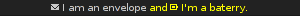- rectangles
echo "6x4 rectangle ^r(6x4) ^fg(red)12x8 ^r(12x8) ^fg(yellow)and finally 100x15 ^r(100x15)" | dzen2 -w 300 -p
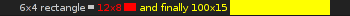- rectangles et positions
echo "^ib(1)^fg(red)^ro(100x15)^p(-98)^fg(blue)^r(20x10)^fg(orange)^p(3)^r(40x10)^p(4)^fg(darkgreen)^co(12)^p(2)^c(10)" | dzen2 -x 20 -y 20 -w 120 -p
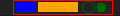- messages pendant 10sec
(echo "This is a message"; sleep 10) | dzen2 -bg darkred -fg grey80
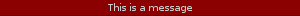- affiche "header" et un message multi-lignes
(echo Header; cal; sleep 20) | dzen2 -w 300 -l 8
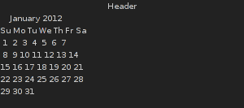- affiche "header" et un message dynamique multi-lignes
(echo Header; while true; do echo test$((i++)); sleep 1; done) | dzen2 -w 300 -l 12
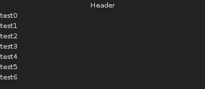- menu simple:
dzen2 -w 200 -l 4 -p -m < dzenmenu.txt
où dzenmenu.txt se présente comme suit(chaque entrée après “Menu” correspond à une commande)
Menu
urxvtc
rox-filer
firefox
geany
- menu horizontal sans fichier menu
echo -e "xterm\nxclock\nxeyes\nxfontsel" | dzen2 -w 300 -l 4 -m h -p
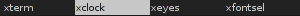amusez-vous bien avec dzen2 :)